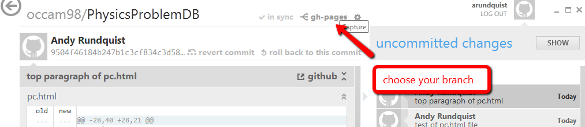

Getting started with development on a Windows machine
GitHub has the following paradigm: suck files down to your local machine, tinker with them, make sure they work (testing, in our case, php, mysql, other interestiing stuff), and them pushing the changes back up to the GitHub web server for others to repeat. This page walks you through:
- Getting your windows machine to talk with the GitHub server
- Getting php and mysql to work on your machine
- Figuring out where all the stuff is saved.
Talking with Github
Don't be alarmed when you hear people talking about having to use the command line when using git and github. That's not the case in windows. Instead, download GitHub for Windows and you have a very nice window-y way of dealing with our repository. Once you've dowloaded it, go to our repository and hit "clone in windows" and you'll be off and running. Once you do, it'll look something like this:
